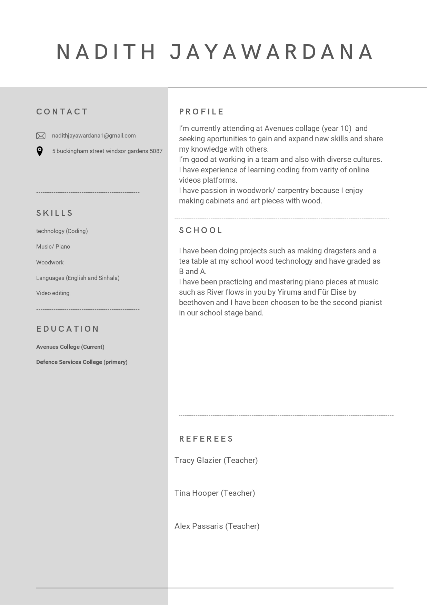

Practice
Details
I have conducted a mockinterview with my EIF teacher and have created a resume, as you can see below. I had to experience what it would feel like to be in an interview and the mockinterview gave me a great opportunity to get experience and to be ready for the interview that I will be getting, and as for the resume I made it to know what a resume contain and to get knowledge about how to create one in the future so that I can show myself to the interviewer.
Mockinterview
- Tell me about yourself - I am Nadith Jayawardana and am studying in Avenues Collage windsor garde. I am working towards a career in woodwork and engineering.
- What is your greatest strength? - I am respectful and always like to thank others. I have times where it looks impossible to achieve but always trying to finish it at time such as learning a piano piece that looks impossible to achieve.
- What is your greatest weakness? - I don’t have confidence and hard to communicate with other people. This is a skill that I would like to work and improve on by working in groups.
- Why would you like to work here? - I like this company because of there way of detailing and the experience they have with their job to give thier customers the best experience they have and I can see that I would be able to improve my skills and my experience in many ways in this company.
- Why should we hire you? /Why are you suitable for this position? - I have transferable experience skills in carpentry that I could bring to the company and I have attention to detail that your company give to their customers.
- What skills or experience do you have in this industry? - I am currently studying in a school as a year 10 student and have the knowledge and experience that I get from wood technology and mathematics as a student in year 10.
- What is your greatest accomplishment? - I have moved to Australia and is studying in Avenues College. Studying English and learning subject from english medium. I needed to get into the exchange and the pedal prix team and now because of my piano skills I am in the exchange as the second pianist to the stage band and I have joined with the pedal prix team because I like doing racing and cycling when I Was little.
- Describe a difficult problem or situation that you have encountered and how did you overcome it? - When I moved into Australia I only had little knowledge and experience in English and even when I was studying in my mother language I was not good at interacting with other people. I was able to overcome this because I found some student that are from my motherland and was able to get experience on talking english and I gained confidence in interacting with other people and got better at english with hearing english every day and talking with other little by little.
The resume
